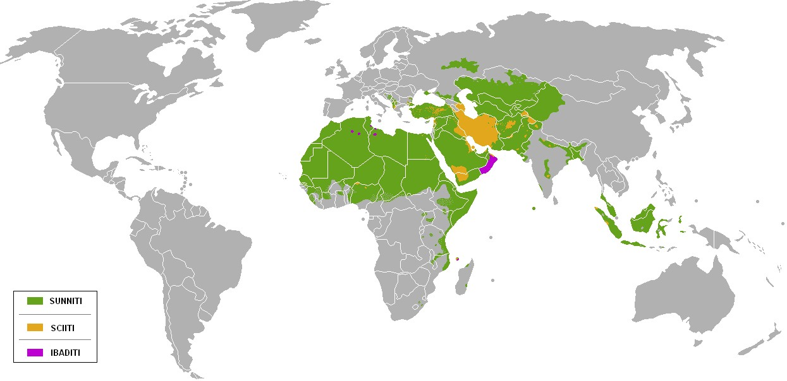

Sunniy va shia Islom: farqi, tarixiy kelib chiqishi va mazhablar
Islomdagi ikki asosiy yo'nalish — sunniy va shia — Payg'ambar Muhammad (sollallohu alayhi vasallam) vafotidan keyingi rahbarlik masalasidan kelib chiqqan. Mana bu bo'linishning tarixi, asosiy aqidaviy va huquqiy farqlari, mazhablari, jahon bo'yicha taqsimoti hamda O'zbekiston va Markaziy Osiyodagi ahvoli — neytral va hurmat bilan bayon etilgan.

Islom — bir Alloh, bir Qur'on va bir Payg'ambar (Muhammad sollallohu alayhi vasallam) atrofida birlashgan yagona dindir. Shunga qaramay, musulmonlar tarixan ikki asosiy yo'nalishga — sunniy va shiaga — bo'lingan. Ularni ajratgan narsa aqidaning o'zagi emas, balki ko'proq Payg'ambar vafotidan keyin ummatga kim rahbarlik qilishi va diniy hokimiyat qanday o'tishi masalasidir. Bu maqola ikki an'anani birortasini ustun qo'ymay, ta'limiy va neytral tarzda tushuntiradi (Manba: Britannica — Islam; BBC — Sunni and Shia).
Bo'linishning kelib chiqishi
Payg'ambar Muhammad (sollallohu alayhi vasallam) milodiy 632-yilda vafot etganida, u aniq ifodalangan va hammaga ma'lum bo'lgan voris qoldirmagan degan qarash keng tarqalgan. Natijada musulmonlar orasida “endi ummatni kim boshqaradi?” degan savol tug'ildi. Keyinchalik sunniy deb atalgan ko'pchilik jamoa Payg'ambarning yaqin sahobasi Abu Bakrni maslahat (shuro) va jamoa roziligi asosida birinchi xalifa etib tanladi. Keyinchalik shia (“Ali tarafdorlari” — shiatu Ali) deb atalgan boshqa guruh esa rahbarlik Payg'ambarning amakivachchasi va kuyovi Ali ibn Abu Tolibga tegishli bo'lishi kerak, deb hisobladi (Manba: Britannica — Shia; Wikipedia — Succession to Muhammad).
Xalifalik haqidagi ziddiyat
Sunniylar nuqtai nazaridan, Payg'ambar o'rniga kim kelishini ummat o'zaro kelishuv asosida belgilashi lozim edi; shuning uchun ular ketma-ket to'rt xalifa — Abu Bakr, Umar, Usmon va Ali — ni “to'g'ri yo'ldan borgan xalifalar” (xulafoi roshidin) deb e'zozlaydi. Shialar esa Alini Payg'ambarning haqli vorisi deb biladi va rahbarlik dastlab unga emas, boshqalarga o'tganini noto'g'ri deb hisoblaydi. Ali oxir-oqibat to'rtinchi xalifa bo'ldi, biroq uning davri ichki nizolar bilan o'tdi. Shunday qilib, dastlabki ixtilof ilohiyot emas, balki siyosiy-ijtimoiy rahbarlik masalasi edi; aqidaviy farqlar keyinchalik shakllandi (Manba: BBC — Sunni and Shia; CBC — Sunni, Shia conflict rooted in dispute over successor).

Karbalo voqeasi (680-yil)
Bo'linishni mustahkamlagan eng muhim voqea — milodiy 680-yilda hozirgi Iroq hududidagi Karbaloda sodir bo'lgan jang edi. Unda Payg'ambarning nabirasi, Alining o'g'li Imom Husayn va uning kichik guruhi Umaviylar xalifaligi qo'shiniga qarshi turib shahid bo'ldi. Bu fojia shialar uchun chuqur diniy va his-tuyg'uli ma'noga ega bo'ldi va ularning o'ziga xosligini mustahkamladi. Husaynning shahid bo'lishi har yili Ashuro kunida xotirlanadi. Ko'pchilik tarixchilar Karbaloni sunniy-shia ajralishini alohida diniy an'analarga aylantirgan burilish nuqtasi deb baholaydi (Manba: Britannica — Husayn ibn Ali; Wikipedia — Battle of Karbala).
Hokimiyat kimda: xalifa yoki imom
Ikki an'ananing eng muhim aqidaviy farqi diniy hokimiyat masalasidir. Sunniylikda Payg'ambardan keyin ilohiy ilhom bilan yo'naltiriladigan ma'sum (xatodan xoli) rahbar yo'q; dastlab xalifa siyosiy-diniy boshliq bo'lgan, din masalalarida esa ulamolar (olimlar) va jamoa kelishuvi muhim rol o'ynaydi. Shialik, xususan uning eng yirik tarmog'i, imomlar — Ali va uning avlodlari — Alloh tomonidan tayinlangan, ma'sum va dinni ilohiy vakolat bilan talqin qiluvchi rahbarlar, deb ta'lim beradi. Shuning uchun shialikda ruhoniylar iyerarxiyasi va diniy marja'lar (taqlid qilinadigan yuqori darajali olimlar) tizimi ko'proq rivojlangan (Manba: Britannica — Imam; BBC — Sunni and Shia).
Hadis va fiqh farqlari
Ikkala an'ana ham Qur'onni Allohning so'zi deb biladi va Payg'ambar sunnatiga amal qiladi, biroq hadis (Payg'ambar so'zlari va amallari) to'plamlari va ularni baholash yo'llari farq qiladi. Sunniylarda eng e'tiborli to'plamlar “Kutub as-sitta” deb nomlanuvchi oltita kitob — jumladan Imom Buxoriy va Imom Muslimning sahihlaridir. Shialarda esa o'z hadis to'plamlari bor (masalan, “al-Kofiy” kabi to'rtta asosiy kitob) va ular rivoyatlarni Payg'ambar ahli bayti (oilasi) orqali kelganiga alohida ahamiyat beradi. Fiqhda (islom huquqida) ham ikki an'ana alohida huquqiy maktablarga tayanadi (Manba: Britannica — Hadith; Wikipedia — Hadith terminology).
Sunniy mazhablar: to'rt fiqhiy maktab
Sunniylikda huquqiy masalalar bo'yicha to'rtta asosiy mazhab (fiqhiy maktab) shakllangan: Hanafiy, Molikiy, Shofiiy va Hanbaliy. Bular alohida dinlar yoki firqalar emas, balki Qur'on va sunnatni amaliyotda qo'llashdagi uslubiy maktablardir va bir-birini qonuniy deb tan oladi. Hanafiy mazhabi (Imom Abu Hanifaga nisbatan) eng keng tarqalgan bo'lib, Markaziy va Janubiy Osiyo hamda Turkiyada ustun; Molikiy mazhabi Shimoliy va G'arbiy Afrikada; Shofiiy mazhabi Janubi-Sharqiy Osiyo va Sharqiy Afrikada; Hanbaliy mazhabi esa asosan Arabiston yarimorolida tarqalgan (Manba: Britannica — Madhhab; Wikipedia — Madhhab).
Shia tarmoqlari: imomiylik, ismoiliylik, zaydiylik
Shialik ham bir xil emas; u imomlar silsilasi haqidagi qarashga ko'ra bir nechta tarmoqqa bo'linadi. Eng yirigi — o'n ikki imomni (ithna ashariya, ya'ni o'n ikkichilar) tan oluvchi imomiylik bo'lib, Eron, Iroq, Ozarbayjon, Bahrayn va Livanda ko'pchilikni tashkil etadi. Ismoiliylar yettinchi imomdan boshlab boshqa silsilani kuzatadi va dunyo bo'ylab tarqalgan jamoalarga ega. Zaydiylar esa Zayd ibn Aliga ergashib, imomlik borasida nisbatan moslashuvchan qarashga ega bo'lib, asosan Yaman bilan bog'liq. Bu tarmoqlar aqida va amaliyotda o'zaro ba'zi farqlarga ega (Manba: Britannica — Shia; Wikipedia — Shia Islam branches).
Jahon bo'yicha taqsimot
Pew tadqiqot markazining baholashiga ko'ra, dunyodagi musulmonlarning taxminan 87–90 foizi sunniy, 10–13 foizi esa shiadir; bu shialar soni jahon bo'yicha taxminan 154–200 million kishini tashkil etadi. Shialar ko'pchilikni tashkil etadigan mamlakatlar — Eron (musulmonlarning ~93 foizi shia), Ozarbayjon (~65–75 foiz), Bahrayn va Iroq (~65–70 foiz). Sunniylar esa Misr, Indoneziya, Bangladesh, Pokiston kabi aholisi eng ko'p musulmon davlatlarda hamda arab dunyosining aksariyat qismi, Turkiya, Shimoliy Afrika va Janubiy Osiyoda ustunlikni saqlaydi (Manba: Pew Research Center — Sunni and Shia Muslims; Pew Research Center — Mapping the Global Muslim Population).
O'zbekiston va Markaziy Osiyo: asosan sunniy, hanafiy
O'zbekiston va umuman Markaziy Osiyo aholisining katta qismi musulmon bo'lib, ularning aksariyati sunniy va aynan hanafiy mazhabiga mansubdir. Hanafiylik bu mintaqaga milodiy VIII asrda islom kirib kelgandan beri o'rnashgan va mahalliy diniy an'ananing asosiy qatlami hisoblanadi; u shaxsiy mulohaza (ra'y)ga nisbatan moslashuvchan yondashuvi bilan tanilgan. Mintaqada shia jamoalar ham mavjud — masalan, Samarqand va Buxoroda tarixan yashab kelgan ba'zi jamoalar — biroq ular kichik ozchilikni tashkil etadi. Shuningdek, Markaziy Osiyo islomida sunniylikka xos tasavvuf (so'fiylik) an'anasi muhim o'rin tutadi (Manba: Britannica — Uzbekistan; Wikipedia — Islam in Uzbekistan).